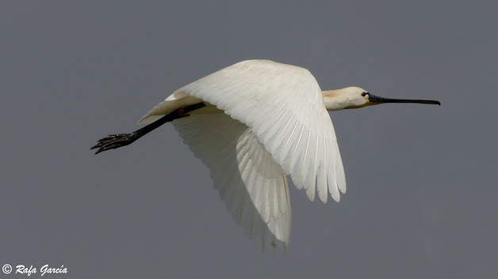
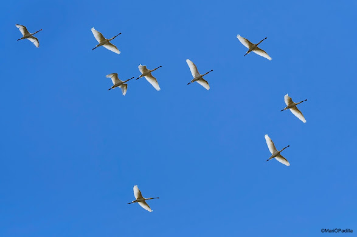

Lo conseguimos
A pesar de la pandemia, hemos conseguido terminar la campaña de seguimiento del 2020 y hacer el
censo de invernada a nivel provincial. Sumamos ya 9 años en estas cuitas. Y afortunadamente,
todos hemos ido sorteando al virus cumpliendo las normas higiénico-sanitarias. Gracias a los que
formamos el equipo y a la conducta ejemplar de cada uno, hemos podido finalizar el periodo de
seguimiento (algo más corto este año para minimizar en todo lo posible, riesgos de contagio). La
nueva atalaya en el “Cuartel del Mar” ha demostrado ser muy útil en muchos sentidos. Nos queda
agradecer públicamente a todos sus amables “guardias” del restaurante, las facilidades dadas
para poder movernos a nuestras anchas por la popularísima “Azotea de las Espátulas” e
ininterrumpidamente durante tres meses.

Una década de seguimiento
Casi sin darnos cuenta han pasado ya 10 años. Allá por el año 2012 comenzamos una aventura que
ya forma parte de nuestras vidas. Un encuentro repetido en el tiempo con los compañeros y ya
amigos y con nuestras queridas espátulas. Hemos superado retos y problemas, pero ahí seguimos.
Esta campaña se pudo desarrollar sin problemas y sorteamos bien la pandemia. La azotea de las
espátulas del Cuartel del Mar (Torre del Puerco) en Chiclana, así como Cabo Roche en Conil se
han convertido en lugar de encuentro no solo de los participantes, sino de los amigos que oyeron
de este proyecto y fueron a ver de qué iba eso de ver aves cruzando hacia África. De esta manera
un porcentaje importante se engancharon y forman ya parte de la familia Limes.

Apertura de la campaña 2020
Comenzamos la novena campaña del seguimiento de las espátulas que utilizan el corredor
migratorio “Playa de la Barrosa- Cabo Roche”. Su espectacular “salto” a África desde la costa de
Cádiz, es todo un fenómeno natural que sorprende por su belleza. Se han llegado a observar cerca
de 2000 aves en tan solo 12 horas.
Desde finales de julio hasta mediados de noviembre se han contabilizado más de 20.000 aves en
paso (más del 94% de su población en Europa occidental).
Este año debido al COVID19 que hemos denominado de transición, con la intención de convertir el
paso también en una celebración, empezaremos el 10 de agosto y terminaremos a mediados de
octubre.
Pueden participar todas aquellas personas que estén interesadas y que deseen compaginar su
descanso vacacional de sol y playa, con el estudio de la más cómoda de observar de las
migraciones de aves.
Contamos con la colaboración del Ayuntamiento de Chiclana de la Fra, Chiclana Natural y el
Cuartel del Mar que nos brinda la oportunidad de tener una atalaya privilegiada para seguir la
migración.
Si estas interesado en participar escribe a limes.platalea@gmail.com o llama o envía un Whatsapp
al teléfono 657285372